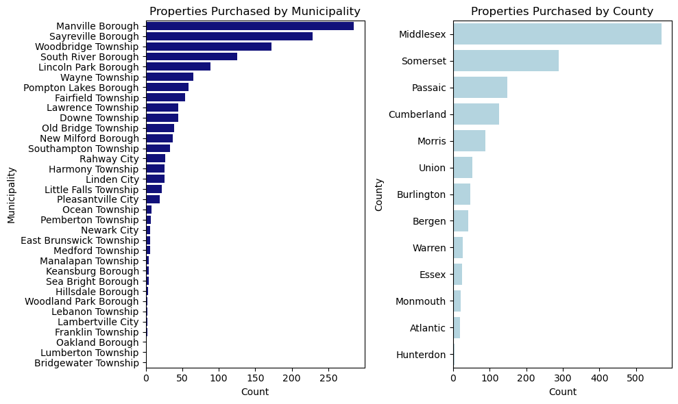
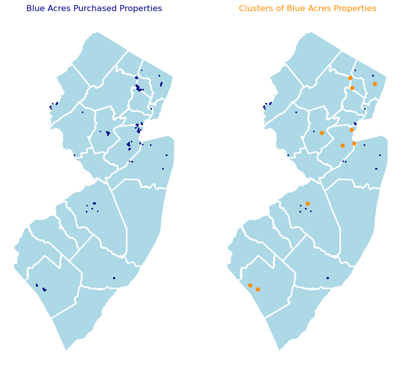

The New Jersey Blue Acres Program is a state-run program that supports relocating homeowners away from flood-prone properties and redeveloping the land to encourage climate resiliency. Operating since 1995, the NJ Department of Environmental Protection (DEP) runs the Blue Acres Program and coordinates with homeowners, local governments, and the federal government. The program ultimately connects federal and state funds with at-risk properties and guides the homeowners through the process of selling their homes to the state. Once a home is purchased following a successful application and buyout process, the property is demolished and rehabilitated into a flood-resilient space - open space that can act as natural flood storage or protection in a flooding event. Blue Acres staff also work closely with municipalities to support climate resilience planning through the program’s buyout process and coordinate long-term stewardship of these community spaces.
Blue Acres helps New Jersey residents whose homes have been damaged in flooding events, such as those whose homes were destroyed or damaged when the remnants of Tropical Storm Ida impacted New Jersey in September 2021.
Preparedness:
Blue Acres contributes to New Jersey’s Climate Change Resilience Strategy through a proactive approach to guide state acquisition of lands that increases host community resilience through the strategic acquisition of lands that have been damaged, or may be prone to future damage, due to sea-level rise, storms, or storm-related flooding, or that may buffer or protect other lands from such damage.
Funding Sources
Funding for the program comes from a mixture of federal and state dollars. Much of the funding comes from the Federal Emergency Management Agency (FEMA), which is also one of the major partners of the program. Blue Acres has received funding from federal sources such as 1 :
FEMA’s Hazard Mitigation Grant Program (HMGP)
US Department of Housing and Urban Development’s Community Development Block Grant – Disaster Recovery Program
US Department of Agriculture – Natural Resources Conservation Service
Additionally, the state contributes funding - residents have previously passed bonds to provide funding for property acquisitions and in 2019, a constitutional amendment was passed to provide funding for the program from a portion of the state corporate business tax. 2 A large influx of funding came in response to Hurricane Sandy in 2012, which caused billions of dollars in damage to New Jersey properties.
Property Acquisitions to Date
Since the program began in 1995, over 1,400 properties have been acquired. While this number is low, the program is nationally recognized for two key features:
Helping homeowners navigate the difficult process of a state-led buyout to leave their home and relocate
Converting former flood-prone properties to more sustainable flood-resilient spaces
However, a DEP-funded study by researchers at Rutgers University and South Dakota State University highlighted how nearly 630,000 properties in the state have a “greater than a 26% chance of being severely affected by flooding over the next 30 years”, which is compounded by the state being the most densely populated and thus highly developed in terms of land use in the country. 3
Buyout Eligibility Criteria
The Blue Acres website provides some guidance on eligibility and criteria for a homeowner to receive funding for a buyout but states that the program evaluates properties based on a range of information. All buyouts are voluntary, and there is no requirement for nearby and contiguous properties in the neighborhood to also be purchased in order for a homeowner to receive a buyout. The Frequently Asked Questions page of their website states the following as considerations, although they state that this list is not exhaustive:
Communities with high risk and vulnerability to climate change
Environmental justice or overburdened communities that are disproportionately impacted by flooding and other adverse environmental conditions
A high concentration of homes that experienced the most severe damage from a recent storm especially when several homes resulted in an official declaration of substantial damage
Communities with homes that have submitted repeated flood insurance claims under the National Flood Insurance Program
Resilience interest and buyout support from the local government
Cost-effectiveness of the buyout according to FEMA requirements under federal law
Opportunity for significant environmental impact and/or improvement to public health, safety and welfare
Additionally, the FAQ notes that nearly all costs are covered by Blue Acres, including aspects such as the appraisal, any land reviews, the actual purchase, and demolition. A separate webpage discusses the role of local government, who can also request information on what properties are eligible for a buyout if they are in a flood-prone area.
Data Exploration and Analysis
The Blue Acres website provides little detail regarding where these buyouts have occurred and what areas that the DEP considers for its mission of proactive climate reslience planning for flood-prone areas. The website, as well as external sources, generally do not include mapping or summaries of the impact of the program statewide. However, publicly available parcel records accessed through the DEP’s Bureau of GIS can help identify and visualize implementation of the Blue Acres Program.
Code
# packagesimport geopandas as gpdimport holoviews as hvimport hvplot.pandasimport numpy as npimport pandas as pdimport cenpyimport pygrisfrom matplotlib import pyplot as pltimport seaborn as snsfrom sklearn.cluster import dbscan import datetime as dtfrom pyproj import CRSimport requests# optionspd.options.display.max_columns =999pd.options.display.max_rows =999pd.options.display.float_format ='{:.2f}'.format
Mapping Blue Acres-Funded Parcels
DEP Bureau of GIS provides API access to their data sets - this analysis uses the data set titled State, Local and Nonprofit Open Space of New Jersey. This data is accessed and filtered to include only parcels that are designated with “Blue Acres Program” as their funding type - 1,436 as of December 2023.
Additionally, the pygris Python package is used to download administrative boundaries for both New Jersey counties and Census tracts - 2019 boundaries are used for consistency with time periods used in the k-means clustering analysis conducted at a later stage in this project.
Code
# downloads Blue Acres parcels from NJDEP APIurl ="https://mapsdep.nj.gov/arcgis/rest/services/Features/Land/MapServer/65/query"params = {"where": "FUNDING_TYPE = 'Blue Acres Program'", # Give me all rows"outFields": "*", # All fields"f": "geojson", # GeoJSON format"outSR": "4326", # The desired output CRS}r = requests.get(url, params=params)json = r.json()features = json["features"]# saves to gdfblueAcres = gpd.GeoDataFrame.from_features(features, crs="EPSG:4326")# gets centroids and associated coordinates from parcelsblueAcres['centroid'] = blueAcres['geometry'].to_crs("EPSG:3424").centroidblueAcres['x'] = blueAcres['centroid'].xblueAcres['y'] = blueAcres['centroid'].y# download administrative boundaries for mapping from pygrisNJ_counties = pygris.counties(state="NJ", year=2019).to_crs("EPSG:3424")NJ_tracts = pygris.tracts(state="NJ", year=2019).to_crs("EPSG:3424")#blueAcres.count()
Once downloaded, a simple interactive map of Blue Acres parcels allows users to view where buyouts have occured across the state since the program was implemented in 1995.
Make this Notebook Trusted to load map: File -> Trust Notebook
Comparing Buyouts Across Towns and Counties
The DEP data includes fields for the municipality and county where the parcel is located. After creating two groupings of this data by those two location parameters and finding the size of each group, charts can be generated that show what municipalities or counties have seen the most purchases by the Blue Acres Program.
Manville Borough in Somerset County, the muncipality with highest number of Blue Acres-funded properties, has experienced repetitive and severe flooding including Hurricane Irene in 2011, Hurricane Sandy in 2012, and Hurricane Ida in 2021.
Lincoln Park is in Morris County and has been consistently flooded due in part to over two-thirds of the community presiding in a FEMA Special Flood Hazard Area (1% annual flood chance) - the borough also had significant damage from Hurricane Irene. 4
Code
#groups observations by municipality and countycount1 = blueAcres.groupby(["MUNICIPALITY"]).size().sort_values(ascending=False).reset_index().rename(columns={0: 'COUNT'})count2 = blueAcres.groupby(["COUNTY"]).size().sort_values(ascending=False).reset_index().rename(columns={0: 'COUNT'})f, ax= plt.subplots(1, 2, figsize=(10, 6))# Plot for MUNICIPALITYsns.barplot( x='COUNT', y='MUNICIPALITY', data=count1, color="darkblue", ax=ax[0] # Use the first subplot)# Plot for COUNTYsns.barplot( x='COUNT', y='COUNTY', data=count2, color="lightblue", ax=ax[1] # Use the second subplot)# Customize plot aestheticsax[0].set_title('Properties Purchased by Municipality')ax[0].set_xlabel('Count')ax[0].set_ylabel('Municipality')ax[1].set_title('Properties Purchased by County')ax[1].set_xlabel('Count')ax[1].set_ylabel('County')# Adjust layout to prevent clipping of titlesplt.tight_layout()

Blue Acres Parcel Cluster Analysis
Through the clustering algorithm DBSCAN (Density-Based Spatial Clustering of Applications with Noise), areas with significant numbers of buyouts can be identified. Parcels are converted to points using their centroid and parameters are set - for this analysis, the maximum distance between two points to be considered as in the same neighborhood is 2 miles, and there must be 49 neighboring points for an individual point to be considered a part of the core cluster. Points within two miles but without 49 neighboring points are still part of the cluster, but are considered edge points. Points outside of two miles are considered “noise points”.
The algorithm with these parameters determined that only 119 points were noise points - over 1,300 points were included in one of 10 clusters of Blue Acres parcels.
The following maps shows individual Blue Acres properties in blue on the left and the average location of the DBSCAN-identified clusters in orange on the right, with noise points in blue. These maps show that a majority of clusters are inland, with flooding most likely to have occured from riverine flooding. There are also several clusters near the coast of central New Jersey, where Sayreville, Woodbridge, and South River are located.
Code
# Plots points of parcels and clusters side by sidef, ax = plt.subplots(1, 2, figsize=(10, 10))NJ_counties.plot(ax=ax[0], color ="lightblue", edgecolor="white", linewidth =2,)blueAcres['centroid'].plot(ax=ax[0], color='darkblue', markersize=1)ax[0].set_title('Blue Acres Purchased Properties', color ="darkblue")ax[0].set_axis_off()NJ_counties.plot(ax=ax[1], color ="lightblue", edgecolor="white", linewidth =2,)noise = blueAcres_dbscan.loc[blueAcres_dbscan["label"] ==-1]ax[1].scatter(noise["x"], noise["y"], c="darkblue", s=5, linewidth=0)for label_num inrange(0, num_clusters): this_cluster = blueAcres_dbscan.loc[blueAcres_dbscan["label"] == label_num] x_mean = this_cluster["x"].mean() y_mean = this_cluster["y"].mean() ax[1].scatter(x_mean, y_mean, linewidth=0, color="darkorange")ax[1].set_title('Clusters of Blue Acres Properties', color='darkorange')ax[1].set_axis_off()

The average locations of these clusters are then merged with Census tract data from pygris and saved to a separate file for use in the the k-means clustering analysis at a later stage in this project.
Code
# Chunk for extracting and saving file for cluster points to use with NFIP datacluster_centroids = []for label_num inrange(0, num_clusters):# Extract the samples with this label number this_cluster = blueAcres_dbscan.loc[blueAcres_dbscan["label"] == label_num]# Calculate the mean (x,y) point for this cluster in red x_mean = this_cluster["x"].mean() y_mean = this_cluster["y"].mean() cluster_centroids.append((x_mean, y_mean, label_num))cluster_df = pd.DataFrame(cluster_centroids)cluster_df = cluster_df.rename( columns={0: "x",1: "y",2: "label" })cluster_gdf = gpd.GeoDataFrame( cluster_df, geometry=gpd.points_from_xy(cluster_df["x"], cluster_df["y"]), crs="EPSG:3424",)cluster_tracts = gpd.sjoin(NJ_tracts,cluster_gdf, how ="inner")# from pathlib import Path # filepath = Path('data/BA_clusters_tracts.csv') # filepath.parent.mkdir(parents=True, exist_ok=True) # cluster_tracts.to_csv(filepath)